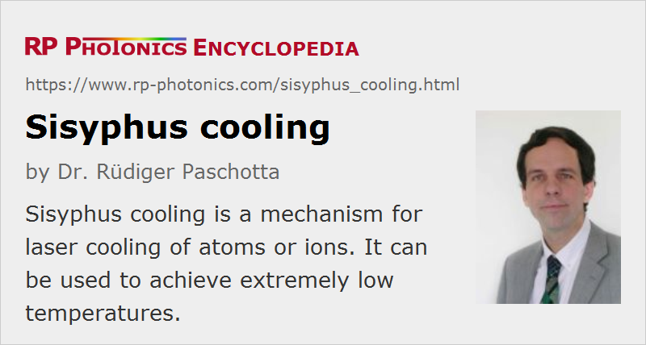

Sisyphus Cooling
Definition: a mechanism for laser cooling of atoms or ions
More general terms: laser cooling
German: Sisyphos-Kühlung
Categories: quantum optics, methods
How to cite the article; suggest additional literature
Author: Dr. Rüdiger Paschotta
Sisyphus cooling (or Sisyphos cooling) is a mechanism for laser cooling of atoms or ions using light forces. It was understood in 1985, after the observation that laser cooling experiments with cesium atoms can lead to temperatures well below the Doppler limit, that the simple mechanism of Doppler cooling is not a sufficient explanation. The mechanism of Sisyphus cooling is somewhat sophisticated. It involves a polarization gradient, as generated e.g. by two counterpropagating linearly polarized laser beams with perpendicular polarization directions (lin ⊥ lin configuration), and is therefore sometimes called polarization gradient cooling. The full explanation is based on the picture of dressed states [1]. An essential ingredient is that when atoms in a certain dressed state “climb uphill”, i.e. reach a position where their potential energy is relatively large, it becomes likely that they are optically pumped into another state for which the potential energy at that position is close to a minimum. In such a way, the polarization gradient introduces non-conservative light forces, which can reduce the average kinetic energy of atoms.
Sisyphus cooling has become important for optical frequency standards, because it makes it possible to cool atoms to very low temperatures (“sub-Doppler temperatures”), so that the linewidth of certain forbidden transitions becomes very small.
Questions and Comments from Users
Here you can submit questions and comments. As far as they get accepted by the author, they will appear above this paragraph together with the author’s answer. The author will decide on acceptance based on certain criteria. Essentially, the issue must be of sufficiently broad interest.
Please do not enter personal data here; we would otherwise delete it soon. (See also our privacy declaration.) If you wish to receive personal feedback or consultancy from the author, please contact him e.g. via e-mail.
By submitting the information, you give your consent to the potential publication of your inputs on our website according to our rules. (If you later retract your consent, we will delete those inputs.) As your inputs are first reviewed by the author, they may be published with some delay.
Bibliography
| [1] | J. Dalibard and C. Cohen-Tannoudji, “Dressed-atom approach to atomic motion in laser light: the dipole force revisited”, J. Opt. Soc. Am. B 2 (11), 1707 (1985), doi:10.1364/JOSAB.2.001707 |
See also: laser cooling, Doppler cooling, Doppler limit, recoil limit, optical frequency standards, frequency metrology
and other articles in the categories quantum optics, methods
|  |
If you like this page, please share the link with your friends and colleagues, e.g. via social media:
These sharing buttons are implemented in a privacy-friendly way!